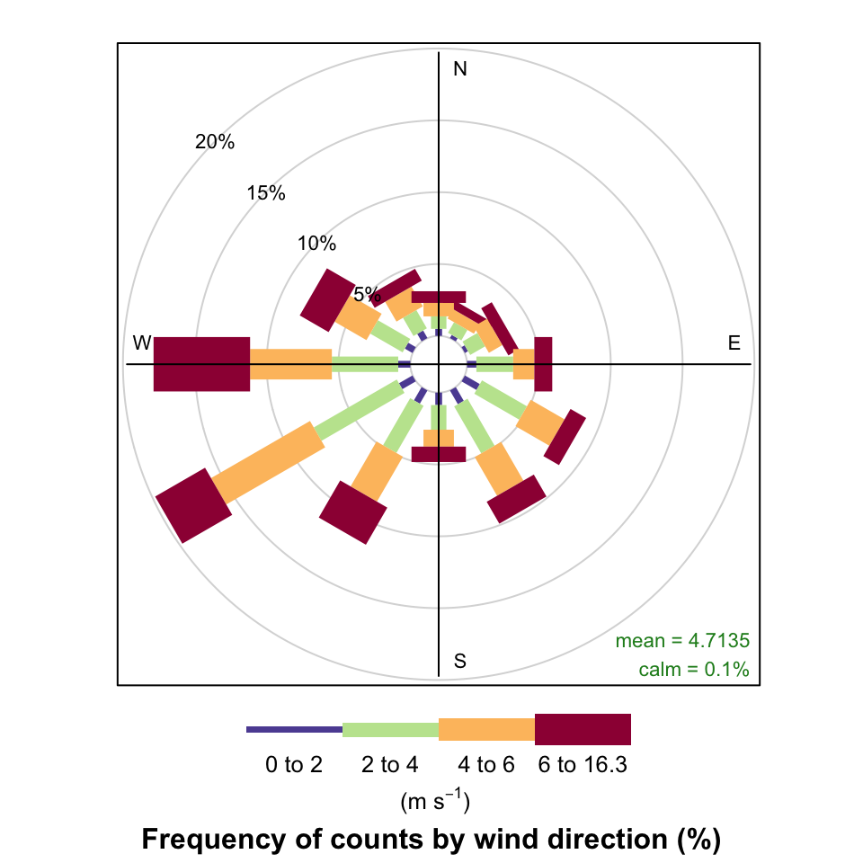

install.packages("worldmet")4 Access meteorological data
Abstract
Meteorological data is key to understanding air quality measurements. This section describes a fast and convenient way of accessing meteorological data for sites worldwide.
4.1 The worldmet package
Most of the import functions described in Chapter 3 return basic modelled hourly meteorological data (wind speed, wind direction and surface temperature). These data are derived from the WRF model that Ricardo runs to provide the data.
Alternatively it may be advantageous to use surface measurements. worldmet provides an easy way in which to access surface meteorological data from >30,000 sites across the world. The package accesses the NOAA webservers to download hourly data. See https://github.com/davidcarslaw/worldmet and https://www.ncdc.noaa.gov/isd for further information.
Access to surface meteorological data is very useful in general but is especially useful when using openair and functions such as polarPlot. To install the package, type:
There are two main functions in the package: getMeta and importNOAA. The former helps the user find meteorological sites by name, country and proximity to a location based on the latitude and longitude. getMeta will also return a code that can be supplied to importNOAA, which then imports the data.
Probably the most common use of getMeta is to search around a location of interest based on its latitude and longitude. First we will load the worldmet (and other packages we use later):
As an example, we will search for the 10 nearest sites to Dublin (latitude = 53.3, longitude = -6.3)1:
getMeta(lat = 53.3, lon = -6.3, returnMap = TRUE)Note that it is just as easy to access all the site information at once because it is quick to use the map to select the site and its code i.e.
getMeta()We can use the map that is produced to select a site of interest and import the data. For example, to import data for Dublin Airport and look at some of the data:
dublin_met <- importNOAA(code = "039690-99999", year = 2019)
# first few lines of data
dublin_met# A tibble: 8,760 × 24
code station date latit…¹ longi…² elev ws wd air_t…³
<fct> <fct> <dttm> <dbl> <dbl> <dbl> <dbl> <dbl> <dbl>
1 039690… DUBLIN… 2019-01-01 00:00:00 53.4 -6.27 73.8 5.07 250 8.93
2 039690… DUBLIN… 2019-01-01 01:00:00 53.4 -6.27 73.8 4.73 247. 8.1
3 039690… DUBLIN… 2019-01-01 02:00:00 53.4 -6.27 73.8 4.07 250 8.47
4 039690… DUBLIN… 2019-01-01 03:00:00 53.4 -6.27 73.8 4.4 250 8.87
5 039690… DUBLIN… 2019-01-01 04:00:00 53.4 -6.27 73.8 5.47 257. 8.47
6 039690… DUBLIN… 2019-01-01 05:00:00 53.4 -6.27 73.8 4.9 260 8.8
7 039690… DUBLIN… 2019-01-01 06:00:00 53.4 -6.27 73.8 4.9 260 8.83
8 039690… DUBLIN… 2019-01-01 07:00:00 53.4 -6.27 73.8 4.4 254. 8.93
9 039690… DUBLIN… 2019-01-01 08:00:00 53.4 -6.27 73.8 5.27 270 8.93
10 039690… DUBLIN… 2019-01-01 09:00:00 53.4 -6.27 73.8 4.73 263. 8.1
# … with 8,750 more rows, 15 more variables: atmos_pres <dbl>,
# visibility <dbl>, dew_point <dbl>, RH <dbl>, ceil_hgt <dbl>, cl_1 <dbl>,
# cl_2 <dbl>, cl_3 <dbl>, cl <dbl>, cl_1_height <dbl>, cl_2_height <dbl>,
# cl_3_height <dbl>, precip_12 <dbl>, precip_6 <dbl>, precip <dbl>, and
# abbreviated variable names ¹latitude, ²longitude, ³air_tempPlot a wind rose.
windRose(dublin_met)
4.2 Linking with air quality data
Having imported some meteorological data it will often be necessary to combine it with air quality data. Quite how this is done depends on the air quality data. The important point is there should be a date column in each data set that make the connection between the two. It may also depend on whether the air quality data has existing fields that also exist in the meteorological data e.g. ws, wd and air_temp, as is the case with most data accessible as described in Chapter 3. In this case, the aim to to replace any existing meteorological variables in the air quality data with those in the meteorological data. An example is shown below.
# import some air quality data and check the variables that exist
aq_2019 <- importAURN(site = "kc1", year = 2019)
names(aq_2019) # ws, wd, air_temp already exist from WRF model [1] "site" "code" "date" "co" "nox" "no2"
[7] "no" "o3" "so2" "pm10" "pm2.5" "ws"
[13] "wd" "air_temp"# import some met data - default is London Heathrow
met_2019 <- importNOAA(year = 2019)
# merge the two data sets but not ws, wd, air_temp from aq data
aq_met <- left_join(
select(aq_2019, -ws, -wd, -air_temp),
met_2019,
by = "date"
)
names(aq_met) [1] "site" "code.x" "date" "co" "nox"
[6] "no2" "no" "o3" "so2" "pm10"
[11] "pm2.5" "code.y" "station" "latitude" "longitude"
[16] "elev" "ws" "wd" "air_temp" "atmos_pres"
[21] "visibility" "dew_point" "RH" "ceil_hgt" "cl_1"
[26] "cl_2" "cl_3" "cl" "cl_1_height" "cl_2_height"
[31] "cl_3_height" "precip_12" "precip_6" "pwc" "precip" Note that
returnMapwas only used to display the map in this document and would not normally be needed.↩︎